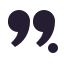

palique
01 · RECOMENDADO
Turno
Dos voces, no un monólogo. La idea de conversación se entiende sin recurrir a un micrófono.
Ver SVG ↗ESTUDIO DE IDENTIDAD · 01
Palique convierte el idioma que estudias en el idioma que usas. Una marca que invita a hablar, incluso antes de saber qué decir.
Comparar los cuatro logos01 / IDENTIDAD
Misma paleta, cuatro ideas. Compara cada firma y fíjate en la muestra pequeña: así se distingue mejor qué símbolo puede funcionar fuera del nombre.
01 · RECOMENDADO
Dos voces, no un monólogo. La idea de conversación se entiende sin recurrir a un micrófono.
Ver SVG ↗ palique
palique02 · MONOGRAMA
Una inicial con cola de diálogo. Es la silueta más compacta; comunica menos el intercambio.
Ver SVG ↗03 · VOZ
Una voz visible, útil para animación. El riesgo es que se lea como una app de audio.
Ver SVG ↗
palique04 · EDITORIAL
Comillas que abren espacio a otra voz. Tiene carácter, aunque su vínculo con hablar es menos directo.
Ver SVG ↗02 / DIRECCIÓN DE PRODUCTO
Cuatro maquetas con Turno. Son escenas de muestra, no una app funcional. Se mantienen las áreas actuales; cambia cómo se distinguen y qué acción destaca en cada una.
Empieza con un hola.
PALIQUE ESTÁ HABLANDO
And something to eat?
Un café con leche, por favor.
02 / TEMAS
Elige una situación para empezar.
03 / APRENDER
Lecciones para tu próxima conversación.
Propón un plan y acuerda la hora.
03 / SISTEMA VISUAL
#251D31Texto · sesión activa#FAF7F0Fondo · descanso visual#DDF58FMarca · acción principal#E5D9FAAprendizaje · soporte#FFDBCATemas · acento cálidoTIPOGRAFÍA
Serif para titulares expresivos; sans del sistema para controles, traducciones y texto de estudio.
MOVIMIENTO
Conservar la presencia vocal, con una forma más simple y estados que también se leen sin animación.